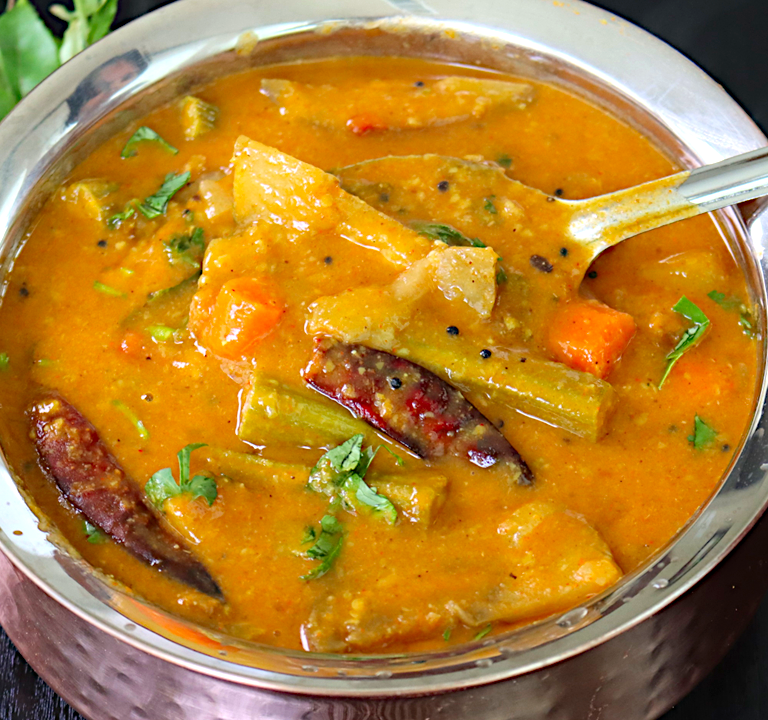

Kerala Style Sambar Curry

Description:
Kerala style Sambar is a delicious and aromatic South Indian curry made with a variety of vegetables, lentils, and a special blend of spices. This recipe will guide you through the steps to prepare this classic and flavorful dish.
Ingredients:
- 1/2 cup of toor dal (split pigeon peas)
- 1 cup of mixed vegetables (e.g., drumsticks, pumpkin, carrot, beans), chopped
- 1 small eggplant, cubed
- 1 small onion, finely chopped
- 2 ripe tomatoes, chopped
- 1/2 cup of tamarind extract (tamarind pulp soaked in water)
- 1/2 teaspoon of turmeric powder
- 1 teaspoon of red chili powder
- 1 tablespoon of sambar powder
- 1/2 teaspoon of fenugreek seeds
- 1/2 teaspoon of mustard seeds
- 1-2 dried red chilies
- A pinch of asafoetida (hing)
- 10-12 curry leaves
- 2 tablespoons of coconut oil
- Salt to taste
- Fresh coriander leaves for garnish
Steps:
- Preparing the Dal:
- Wash the toor dal thoroughly and pressure cook it with enough water until it's soft and mushy. Set aside.
- Preparing Tamarind Extract:
- Soak tamarind in warm water and extract the pulp. Discard the seeds and fiber, and keep the tamarind extract aside.
- Cooking Vegetables:
- In a large pot, add the chopped mixed vegetables, eggplant, turmeric powder, and salt. Cook them with enough water until they are tender. Set aside.
- Preparing the Sambar:
- Heat coconut oil in a separate pan. Add mustard seeds and fenugreek seeds. When they start to splutter, add dried red chilies, asafoetida, and curry leaves.
- Add chopped onions and sauté until they turn translucent.
- Add the chopped tomatoes and cook until they become soft and pulpy.
- Now, add red chili powder and sambar powder. Sauté for a couple of minutes until the oil starts to separate from the spices.
- Combine the cooked dal and tamarind extract with this mixture. Stir well and let it simmer for about 10 minutes.
- Add the cooked vegetables along with the water they were cooked in. Adjust the consistency by adding more water if needed.
- Let the sambar simmer for another 10-15 minutes, allowing the flavors to meld together.
- Adjust salt and spice levels according to your taste.
- Garnish and Serve:
- Garnish the Kerala style sambar with fresh coriander leaves.
- Serve hot with steamed rice, dosa, idli, or vada for a traditional South Indian meal.